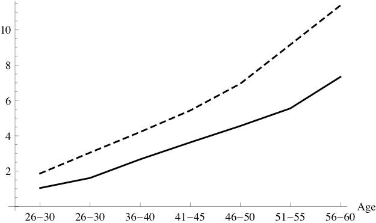

(or, for
the value function, . We have thus reduced the problem
from two continuous state variables to one (and thereby enormously simplified its
solution).
(or, for
the value function, . We have thus reduced the problem
from two continuous state variables to one (and thereby enormously simplified its
solution).
Note: The GitHub repo SolvingMicroDSOPs associated with this document contains python code that produces all results, from scratch, except for the last section on indirect inference. The numerical results have been confirmed by showing that the answers that the raw python produces correspond to the answers produced by tools available in the Econ-ARK toolkit, more specifically those in the HARK which has full documentation. The MSM results at the end have have been superseded by tools in the EstimatingMicroDSOPs repo.
Abstract Dynamic Stochastic Optimization, Method of Simulated
Moments, Structural Estimation, Indirect Inference
E21, F41
_____________________________________________________________________________________
These notes describe tools for solving microeconomic dynamic stochastic optimization problems,
and show how to use those tools for efficiently estimating a standard life cycle consumption/saving
model using microeconomic data. No attempt is made at a systematic overview of the many possible
technical choices; instead, I present a specific set of methods that have proven useful in my own work
(and explain why other popular methods, such as value function iteration, are a bad idea).
Paired with these notes is Python code that solves the problems described in the text.
| PDF: | https://github.com/llorracc/SolvingMicroDSOPs/blob/master/SolvingMicroDSOPs.pdf |
| Slides: | https://github.com/llorracc/SolvingMicroDSOPs/blob/master/SolvingMicroDSOPs-Slides.pdf |
| Web: | https://llorracc.github.io/SolvingMicroDSOPs |
| Code: | https://github.com/llorracc/SolvingMicroDSOPs/tree/master/Code |
| Archive: | https://github.com/llorracc/SolvingMicroDSOPs |
| (Contains LaTeX code for this document and software producing figures and results) |
1Carroll: Department of Economics, Johns Hopkins University, Baltimore, MD, ccarroll@jhu.edu The notes were originally written for my Advanced Topics in Macroeconomic Theory class at Johns Hopkins University; instructors elsewhere are welcome to use them for teaching purposes. Relative to earlier drafts, this version incorporates several improvements related to new results in the paper “Theoretical Foundations of Buffer Stock Saving” (especially tools for approximating the consumption and value functions). Like the last major draft, it also builds on material in “The Method of Endogenous Gridpoints for Solving Dynamic Stochastic Optimization Problems” published in Economics Letters, available at http://www.econ2.jhu.edu/people/ccarroll/EndogenousArchive.zip, and by including sample code for a method of simulated moments estimation of the life cycle model a la Gourinchas and Parker (2002) and Cagetti (2003). Background derivations, notation, and related subjects are treated in my class notes for first year macro, available at http://www.econ2.jhu.edu/people/ccarroll/public/lecturenotes/consumption. I am grateful to several generations of graduate students in helping me to refine these notes, to Marc Chan for help in updating the text and software to be consistent with Carroll (2006), to Kiichi Tokuoka for drafting the section on structural estimation, to Damiano Sandri for exceptionally insightful help in revising and updating the method of simulated moments estimation section, and to Weifeng Wu and Metin Uyanik for revising to be consistent with the ‘method of moderation’ and other improvements. All errors are my own. This document can be cited as Carroll (2023a) in the references.
These lecture notes provide a gentle introduction to a particular set of solution tools for the canonical consumption-saving/portfolio allocation problem. Specifically, the notes describe and solve optimization problems for a consumer facing uninsurable idiosyncratic risk to nonfinancial income (e.g., labor or transfer income), first without and then with optimal portfolio choice,1 with detailed intuitive discussion of various mathematical and computational techniques that, together, speed the solution by many orders of magnitude. The problem is solved with and without liquidity constraints, and the infinite horizon solution is obtained as the limit of the finite horizon solution. After the basic consumption/saving problem with a deterministic interest rate is described and solved, an extension with portfolio choice between a riskless and a risky asset is also solved. Finally, a simple example shows how to use these methods (via the statistical ‘method of simulated moments’ (MSM for short)) to estimate structural parameters like the coefficient of relative risk aversion (a la Gourinchas and Parker (2002) and Cagetti (2003)).
The usual analysis of dynamic stochastic programming problems packs a great many events (intertemporal choice, stochastic shocks, intertemporal returns, income growth, the taking of expectations, time discounting, and more) into a complex decision in which the agent makes an optimal choice simultaneously taking all these elements into account. For the dissection here, we will be careful to break down everything that happens into distinct operations so that each element can be scrutinized and understood in isolation.
We are interested in the behavior a consumer who begins tic with a certain amount of ‘capital’ , which is immediately rewarded by a return factor with the proceeds deposited in a bank balance:
| (1) |
Simultaneously with the realization of the capital return, the consumer also receives noncapital income , which is determined by multiplying the consumer’s ‘permanent income’ by a transitory shock :
| (2) |
whose whose expectation is 1 (that is, before realization of the transitory shock, the consumer’s expectation is that actual income will on average be equal to permanent income ).
The combination of bank balances and income define’s the consumer’s ‘market resources’ (sometimes called ‘cash-on-hand,’ following Deaton (1992)):
| (3) |
available to be spent on consumption for a consumer subject to a liquidity constraint that requires (we are not imposing such a constraint yet - see subsection 5.7 below for further discussion).
The consumer’s goal is to maximize discounted utility from consumption over the rest of a lifetime ending at date :
| (4) |
Income evolves according to:
| (5) |
Equation (5) indicates that we are allowing for a predictable average profile of income growth over the lifetime (to capture typical career wage paths, pension arrangements, etc).2 Finally, the utility function is of the Constant Relative Risk Aversion (CRRA), form, .
It is well known that this problem can be rewritten in recursive (Bellman) form:
| (6) |
subject to the Dynamic Budget Constraint (DBC) implicitly defined by equations (1)-(3) and to the transition equation that defines next period’s initial capital as this period’s end-of-period assets:
| (7) |
The single most powerful method for speeding the solution of such models is to redefine the problem in a way that reduces the number of state variables (if at all possible). In the consumption context, the obvious idea is to see whether the problem can be rewritten in terms of the ratio of various variables to permanent noncapital (‘labor’) income (henceforth for brevity, ‘permanent income.’)
In the last tic of life , there is no future, , so the optimal plan is to consume everything:
| (8) |
Now define nonbold variables as the bold variable divided by the level of permanent income in the same period, so that, for example, ; and define .3 For our CRRA utility function, , so (8) can be rewritten as
| (9) |
Now define a new optimization problem:
| (10) |
where division by in second-to-last equation yields a normalized return factor which is the consequence of the fact that we have divided level variables by .
Then it is easy to see that for ,
|
|
and so on back to all earlier periods. Hence, if we solve the problem (10) which has
only a single state variable , we can obtain the levels of the value function,
consumption, and all other variables from the corresponding permanent-income-normalized
solution objects by multiplying each by , e.g. (or, for
the value function, . We have thus reduced the problem
from two continuous state variables to one (and thereby enormously simplified its
solution).
For future reference it will also be useful to write the problem (10) in the traditional way, by substituting and into :
| (11) |
The problem specified above assumes that the agent has only one decision problem to solve in any tic. In practice, it is increasingly common to model agents who have multiple choice tacs per tic; an agent’s problem might have, say, a consumption decision (call it the tac), a labor supply tac (call it ) and a choice of what proportion of their assets to invest in a risky asset (the portfolio-choice tac).
The modeler might well want to explore whether the order in which the tacs are solved makes any difference, either to the substantive results or to aspects of the computational solution like speed and accuracy.
If, as in section 2, we hard-wire into the solution code for each tac an assumption that its successor tac will be something in particular (say, the consumption tac assumes that the portfolio choice is next), then if we want to change the order of the tacs (say, labor supply after consumption, followed by portfolio choice), we will need to re-hard-wire each of the stages to know particular things about its new successor (for example, the specifics of the distribution of the rate of return on the risky asset would need to be known by whatever tac precedes the portfolio choice tac).
But one of the cardinal insights of Bellman’s (1957, “Dynamic Programming”) original work is that everything that matters for the solution to the current problem is encoded in a ‘continuation-value function.’
Using Bellman’s insight, we describe here a framework for isolating the tac problems within a tic from each other, and the tic from its successors in any future tic; the advantage of this is that the isolated tac and tic problems will then be ‘modular’: We can solve them in any order without changing any code. After considering the tac-order , the modeler can costlessly reorder the tacs to consider, say, the order .4
The key to the framework is distinguishing, within each tac’s Bellman problem, three toes:
Arrival: Incoming state variables (e.g., ) are known, but any shocks associated with the period have not been realized and decision(s) have not yet been made
Decision: All exogenous variables (like income shocks, rate of return shocks, and predictable income growth ) have been realized (so that, e.g., ’s value is known) and the agent solves the optimization problem
Continuation: After all decisions have been made, their consequences are measured by evaluation of the continuing-value function at the values of the ‘outgoing’ state variables (sometimes called ‘post-state’ variables).
When we want to refer to a specific toe in the tac we will do so by using an indicator which identifies that toe. Here we use the consumption tac problem described above to exemplify the usage:
Notice that the value functions at different toes of the tac have distinct state variables. Only is known at the beginning of the period, and other variables take on their values with equations like and We will refer to such within-the-tac creation of variables as evolutions.
v In the backward-induction world of Bellman solutions, to solve the problem of a particular tic we must start with an end-of-tic value function, which we designate by including the tic indicator in the subscript:
| (12) |
and we are not done solving the problem of the entire tic until we have constructed a beginning-of-tic value function .
Once we are inside a tac, we will also need an end-of-tac value function. For the last tac in a tic the end-of-tac function is taken to be end-of-tic value function:
| (13) |
One way to describe this is that when we are considering the solution to the current tac, we will be working with what, in computer programming, is called a ‘local function’ whose value at the beginning of the tac-solution algorithm has been initialized to the value of a previously-computed ‘global function’ that had already been constructed by mapping itself to (equation (12)).
The Decision problem can now be written much more cleanly than in equation (10):
| (14) |
whose first order condition with respect to is
| (15) |
which is mathematically equivalent to the usual Euler equation for consumption. (We will reuse this formulation when we turn to section 5.8.)
Having defined these notational conventions, we are now ready to move to substance.
To reduce clutter, we now temporarily assume that for all , so that the terms from the earlier derivations disappear, and setting the problem in the second-to-last period of life can now be expressed as
| (16) |
where
|
|
Using (0) ; (1) ; (2) the definition of ; and (3) the definition of the expectations operator,
| (17) |
where is the cumulative distribution function for .
# A ‘raw’ solution to the T-1 solution works, but is very slow:
This maximization problem implicitly defines a ‘local function’ that yields optimal consumption in period for any specific numerical level of resources like .
But because there is no general analytical solution to this problem, for any given we must use numerical computational tools to find the that maximizes the expression. This is excruciatingly slow because for every potential to be considered, a definite integral over the interval must be calculated numerically, and numerical integration is very slow (especially over an unbounded domain!).
Our first speedup trick is therefore to construct a discrete approximation to the lognormal distribution that can be used in place of numerical integration. That is, we want to approximate the expectation over of a function by calculating its value at set of points , each of which has an associated probability weight :
|
|
(because adding weighted values to each other is enormously faster than general-purpose numerical integration).
Such a procedure is called a ‘quadrature’ method of integration; Tanaka and Toda (2013) survey a number of options, but for our purposes we choose the one which is easiest to understand: An ‘equiprobable’ approximation (that is, one where each of the values of has an equal probability, equal to ).
We calculate such an -point approximation as follows.
Define a set of points from  to on the
to on the ![[0,1]](SolvingMicroDSOPs98x.svg) interval as the elements of the set
.5
Call the inverse of the distribution , and define the points . Then the
conditional mean of in each of the intervals numbered 1 to is:
interval as the elements of the set
.5
Call the inverse of the distribution , and define the points . Then the
conditional mean of in each of the intervals numbered 1 to is:
| (18) |
and when the integral is evaluated numerically for each the result is a set of values of that correspond to the mean value in each of the intervals.
The method is illustrated in Figure 1. The solid continuous curve represents the “true” CDF for a lognormal distribution such that , . The short vertical line segments represent the equiprobable values of which are used to approximate this distribution.6
Because one of the purposes of these notes is to connect the math to the code that solves the math, we display here a brief snippet from the notebook that constructs these points.
# This is a snippet of code that constructs mass points # for the equiprobable representation of the problem
| (19) |
We now substitute our approximation (19) for in (16) which is simply the sum of numbers and is therefore easy to calculate (compared to the full-fledged numerical integration (17) that it replaces).
# The code that corresponds to evaluation of the discretized max problem is
Given any particular value of , a numerical maximization tool can now find the that solves (16) in a reasonable amount of time.
The notebook code responsible for computing an estimated consumption function begins in “Solving the Model by Value Function Maximization,” where a vector containing a set of possible values of market resources is created (in the code, various vectors have names beginning mVec; in these notes we will use boldface italics to represent vectors, so we can refer to our collection of points as with values indexed by brackets: is the first entry in the vector, up to a last entry ; we arbitrarily (and suboptimally) pick the first five integers as our five mVec gridpoints (in the code, = )).
We can now apply our solution to (16) to each of the values in , generating a corresponding optimal . This is called ‘sampling’ the consumption function. Using the ordered pairs we can create a piecewise linear ‘interpolating function’ (a ‘spline’) which when applied to any input will yield the value of that corresponds to a linear ‘connect-the-dots’ interpolation of the value of from the values of the two nearest computed points.7
This is accomplished in “An Interpolated Consumption Function,” which generates an interpolating function that we designate .
Figures 2 and 3 show plots of the constructed and . While the function looks very smooth, the fact that the function is a set of line segments is very evident. This figure provides the beginning of the intuition for why trying to approximate the value function directly is a bad idea (in this context).8
Piecewise linear ‘spline’ interpolation as described above works well for generating a good approximation to the true optimal consumption function. However, there is a clear inefficiency in the program: Since it uses equation (16), for every value of the program must calculate the utility consequences of various possible choices of (and therefore ) as it searches for the best choice.
For any given index in ![mmm [j]](SolvingMicroDSOPs149x.svg) , the algorithm, as it searches for the corresponding optimal
, the algorithm will end up calculating for many values close to the optimal
. Indeed, even when searching for the optimal for a different (say for
) the search process might compute for an
, the algorithm, as it searches for the corresponding optimal
, the algorithm will end up calculating for many values close to the optimal
. Indeed, even when searching for the optimal for a different (say for
) the search process might compute for an  close to the correct optimal
for . But if that difficult computation does not correspond to the exact solution to
the problem, it is discarded.
close to the correct optimal
for . But if that difficult computation does not correspond to the exact solution to
the problem, it is discarded.
To avoid solving the problem independently over and over again for multitudes of values of that are close to each other, we can employ the same interpolation technique used above to construct a direct numerical approximation to the value function: Define a vector of possible values for end-of-period assets at time , ( in the code). Next, construct using equation (19); then construct an approximation by passing the vectors and as arguments to a piecewise-linear interpolator (e.g., the one in scipy.interpolate).
The notebook section “Interpolating Expectations,” now interpolates the expected value of ending the period with a given amount of assets.9
Figure 4 compares the true value function to the approximation produced by following the interpolation procedure; the approximated and exact functions are of course identical at the gridpoints of and they appear reasonably close except in the region below .
In all figs, replace gothic h with notation corresponding to the lecture notes.
Loosely speaking, our difficulty reflects the fact that the consumption choice is governed by the marginal value function, not by the level of the value function (which is the object that we approximated). To understand this point, recall that a quadratic utility function exhibits risk aversion because with a stochastic ,
| (20) |
(where is the ‘bliss point’ which is assumed always to exceed feasible ). However, unlike the CRRA utility function, with quadratic utility the consumption/saving behavior of consumers is unaffected by risk since behavior is determined by the first order condition, which depends on marginal utility, and when utility is quadratic, marginal utility is unaffected by risk:
| (21) |
Intuitively, if one’s goal is to accurately capture choices that are governed by marginal value, numerical techniques that approximate the marginal value function will yield a more accurate approximation to optimal behavior than techniques that approximate the level of the value function.
The first order condition of the maximization problem in period is:
| (22) |
In the notebook, the “Value Function versus the First Order Condition” section completes the task of finding the values of consumption which satisfy the first order condition in (22) using the brentq function from the scipy package.
The downward-sloping curve in Figure 6 shows the value of for our baseline parameter values for (the horizontal axis). The solid upward-sloping curve shows the value of the RHS of (22) as a function of under the assumption that . Constructing this figure is time-consuming, because for every value of plotted we must calculate the RHS of (22). The value of for which the RHS and LHS of (22) are equal is the optimal level of consumption given that , so the intersection of the downward-sloping and the upward-sloping curves gives the (approximated) optimal value of . As we can see, the two curves intersect just below . Similarly, the upward-sloping dashed curve shows the expected value of the RHS of (22) under the assumption that , and the intersection of this curve with yields the optimal level of consumption if . These two curves intersect slightly below . Thus, increasing from 3 to 4 increases optimal consumption by about 0.5.
Now consider the derivative of our function . Because we have constructed
as a linear interpolation, the slope of  between any two adjacent points
is constant. The level of the slope immediately below any particular gridpoint
is different, of course, from the slope above that gridpoint, a fact which implies that the
derivative of follows a step function.
between any two adjacent points
is constant. The level of the slope immediately below any particular gridpoint
is different, of course, from the slope above that gridpoint, a fact which implies that the
derivative of follows a step function.
The solid-line step function in Figure 6 depicts the actual value of . When we attempt to find optimal values of given using , the numerical optimization routine will return the for which . Thus, for the program will return the value of for which the downward-sloping curve intersects with the ; as the diagram shows, this value is exactly equal to 2. Similarly, if we ask the routine to find the optimal for , it finds the point of intersection of with ; and as the diagram shows, this intersection is only slightly above 2. Hence, this figure illustrates why the numerical consumption function plotted earlier returned values very close to for both and .
We would obviously obtain much better estimates of the point of intersection between
and if our estimate of  were not a step function. In fact, we
already know how to construct linear interpolations to functions, so the obvious next step is to
construct a linear interpolating approximation to the expected marginal value of end-of-period
assets function at the points in :
were not a step function. In fact, we
already know how to construct linear interpolations to functions, so the obvious next step is to
construct a linear interpolating approximation to the expected marginal value of end-of-period
assets function at the points in :
| (23) |
yielding (the vector of expected end-of-period- marginal values of assets corresponding to ), and construct as the linear interpolating function that fits this set of points.
The results are shown in Figure 7. The linear interpolating approximation looks roughly as good (or bad) for the marginal value function as it was for the level of the value function. However, Figure 8 shows that the new consumption function (long dashes) is a considerably better approximation of the true consumption function (solid) than was the consumption function obtained by approximating the level of the value function (short dashes).
Even the new-and-improved consumption function diverges notably from the true solution, especially at lower values of . That is because the linear interpolation does an increasingly poor job of capturing the nonlinearity of at lower and lower levels of .
This is where we unveil our next trick. To understand the logic, start by considering the case where and there is no uncertainty (that is, we know for sure that income next period will be ). The final Euler equation (recall that we are still assuming that ) is then:
| (24) |
In the case we are now considering with no uncertainty and no liquidity constraints, the optimizing consumer does not care whether a unit of income is scheduled to be received in the future period or the current period ; there is perfect certainty that the income will be received, so the consumer treats its PDV as equivalent to a unit of current wealth. Total resources available at the point when the consumption decision is made is therefore are comprised of two types: current market resources and ‘human wealth’ (the PDV of future income) of (because it is the value of human wealth as of the end of the period, there is only one more period of income of 1 left).
The well-known optimal solution is to spend half of total lifetime resources in period and the remainder in period . Since total resources are known with certainty to be , and since , this implies that
| (25) |
Of course, this is a highly nonlinear function. However, if we raise both sides of (25) to the power the result is a linear function:
| (26) |
This is a specific example of a general phenomenon: A theoretical literature discussed in Carroll and Kimball (1996) establishes that under perfect certainty, if the period-by-period marginal utility function is of the form , the marginal value function will be of the form for some constants . This means that if we were solving the perfect foresight problem numerically, we could always calculate a numerically exact (because linear) interpolation.
To put the key insight in intuitive terms, the nonlinearity we are facing springs in large part from the fact that the marginal value function is highly nonlinear. But we have a compelling solution to that problem, because the nonlinearity springs largely from the fact that we are raising something to the power . In effect, we can ‘unwind’ all of the nonlinearity owing to that operation and the remaining nonlinearity will not be nearly so great. Specifically, applying the foregoing insights to the end-of-period value function , we can define an ‘inverse marginal value’ function
| (27) |
which would be linear in the perfect foresight case.10 We then construct a piecewise-linear interpolating approximation to the function, , and for any that falls in the range we obtain our approximation of marginal value from:
| (28) |
The most interesting thing about all of this, though, is that the function has another interpretation. Recall our point in (15) that . Since with CRRA utility , this can be rewritten and inverted
| (29) |
What this means is that for any given , if we can calculate the marginal value associated
with ending the period with that , then we can learn the level of that the
consumer must have chosen if they ended up with that as the result of an optimal
unconstrained choice. This leads us to an alternative interpretation of  . It is the
function that reveals, for any ending , how much the agent must have consumed to
(optimally) get to that . We will therefore henceforth refer to it as the ‘consumed
function:’
. It is the
function that reveals, for any ending , how much the agent must have consumed to
(optimally) get to that . We will therefore henceforth refer to it as the ‘consumed
function:’
| (30) |
Thus, for example, for period our procedure is to calculate the vector of points on the consumed function:
| (31) |
with the idea that we will construct an approximation of the consumed function as the interpolating function connecting these points.
This is the appropriate moment to ask an awkward question: How should an interpolated, approximated ‘consumed’ function like be extrapolated to return an estimated ‘consumed’ amount when evaluated at an outside the range spanned by ?
For most canned piecewise-linear interpolation tools like scipy.interpolate, when the
‘interpolating’ function is evaluated at a point outside the provided range, the algorithm
extrapolates under the assumption that the slope of the function remains constant
beyond its measured boundaries (that is, the slope is assumed to be equal to the
slope of nearest piecewise segment within the interpolated range); for example, if
the bottommost gridpoint is and the corresponding consumed level is
we could calculate the ‘marginal propensity to have consumed’
 and construct the approximation as the linear extrapolation below
from:
and construct the approximation as the linear extrapolation below
from:
| (32) |
To see that this will lead us into difficulties, consider what happens to the true (not approximated) as approaches a quantity we will call the ‘natural borrowing constraint’: . From (23) we have
| (33) |
But since , exactly at the first term in the summation would be which is infinity. The reason is simple: is the PDV, as of , of the minimum possible realization of income in (). Thus, if the consumer borrows an amount greater than or equal to (that is, if the consumer ends with ) and then draws the worst possible income shock in period , they will have to consume zero in period , which yields utility and marginal utility.
As Zeldes (1989) first noticed, this means that the consumer faces a ‘self-imposed’ (or, as above, ‘natural’) borrowing constraint (which springs from the precautionary motive): They will never borrow an amount greater than or equal to (that is, assets will never reach the lower bound of ). The constraint is ‘self-imposed’ in the precise sense that if the utility function were different (say, Constant Absolute Risk Aversion), the consumer might be willing to borrow more than because a choice of zero or negative consumption in period would yield some finite amount of utility.11
This self-imposed constraint cannot be captured well when the function is
approximated by a piecewise linear function like  , because it is impossible for the
linear extrapolation below to correctly predict
, because it is impossible for the
linear extrapolation below to correctly predict
So, the marginal value of saving approaches infinity as . But this implies
that ; that is, as approaches its ‘natural
borrowing constraint’ minimum possible value, the corresponding amount of worst-case  must approach its lower bound: zero.
must approach its lower bound: zero.
The upshot is a realization that all we need to do to address these problems is to prepend
each of the  and
and  from (31) with an extra point so that the first element in the
mapping that produces our interpolation function is . This is done in section “The
Self-Imposed ‘Natural’ Borrowing Constraint and the Lower Bound” of the
notebook.
from (31) with an extra point so that the first element in the
mapping that produces our interpolation function is . This is done in section “The
Self-Imposed ‘Natural’ Borrowing Constraint and the Lower Bound” of the
notebook.
The vertical axis should be relabeled - not gothic c anymore, instead
Figure 9 shows the result. The solid line calculates the exact numerical value of the consumed function while the dashed line is the linear interpolating approximation This figure illustrates the value of the transformation: The true function is close to linear, and so the linear approximation is almost indistinguishable from the true function except at the very lowest values of .
Figure 10 similarly shows that when we generate using our augmented (dashed line) we obtain a much closer approximation to the true marginal value function (solid line) than we obtained in the previous exercise which did not do the transformation (Figure 7).12 fix the problem articulated in the footnote
The solution procedure we articulated above for finding still requires us, for each point in , to use a numerical rootfinding algorithm to search for the value of that solves . Though sections 5.6 and 5.7 developed a highly efficient and accurate procedure to calculate , those approximations do nothing to eliminate the need for using a rootfinding operation for calculating, for an arbitrary , the optimal . And rootfinding is a notoriously computation-intensive (that is, slow!) operation.
Fortunately, it turns out that there is a way to completely skip this slow rootfinding step. The method can be understood by noting that we have already calculated, for a set of arbitrary values of , the corresponding values for which this is optimal.
But with mutually consistent values of and  (consistent, in the sense that they
are the unique optimal values that correspond to the solution to the problem), we can obtain
the vector that corresponds to both of them from
(consistent, in the sense that they
are the unique optimal values that correspond to the solution to the problem), we can obtain
the vector that corresponds to both of them from
| (34) |
Rename gothic class, maybe to: EndPrd. Also, harmonize the notation in the notebook in the paper - for example, everwhere in the text we use cNrm for normalized consumption, but for some reason it is capital C in the gothic function.
These  gridpoints are “endogenous” in contrast to the usual solution method of
specifying some ex-ante (exogenous) grid of values of and then using a rootfinding routine
to locate the corresponding optimal consumption vector .
gridpoints are “endogenous” in contrast to the usual solution method of
specifying some ex-ante (exogenous) grid of values of and then using a rootfinding routine
to locate the corresponding optimal consumption vector .
This routine is performed in the “Endogenous Gridpoints” section of the notebook. First, the gothic.C_Tminus1 function is called for each of the pre-specfied values of end-of-period assets stored in . These values of consumption and assets are used to produce the list of endogenous gridpoints, stored in the object mVec_egm. With the values in hand, the notebook can generate a set of and pairs that can be interpolated between in order to yield at virtually zero computational cost!13
One might worry about whether the points obtained in this way will provide a good representation of the consumption function as a whole, but in practice there are good reasons why they work well (basically, this procedure generates a set of gridpoints that is naturally dense right around the parts of the function with the greatest nonlinearity).
Figure 11 plots the actual consumption function and the approximated consumption function derived by the method of endogenous grid points. Compared to the approximate consumption functions illustrated in Figure 8, is quite close to the actual consumption function.
Thus far, we have arbitrarily used gridpoints of (augmented in the last subsection by ). But it has been obvious from the figures that the approximated function tends to be farthest from its true value at low values of . Combining this with our insight that is a lower bound, we are now in position to define a more deliberate method for constructing gridpoints for – a method that yields values that are more densely spaced at low values of where the function is more nonlinear.
A pragmatic choice that works well is to find the values such that (1) the last value exceeds the lower bound by the same amount as our original maximum gridpoint (in our case, 4.); (2) we have the same number of gridpoints as before; and (3) the multi-exponential growth rate (that is, for some number of exponentiations – our default is 3) from each point to the next point is constant (instead of, as previously, imposing constancy of the absolute gap between points).
Section “Improve the ” begins by defining a function which takes as arguments the specifications of an initial grid of assets and returns the new grid incorporating the multi-exponential approach outlined above.
Notice that the graphs depicted in Figures 12 and 13 are notably closer to their respective truths than the corresponding figures that used the original grid.
In section “Solve for in Multiple Periods,” the natural and artificial borrowing constraints are combined with the endogenous gridpoints method to approximate the optimal consumption function for a specific period. Then, this function is used to compute the approximated consumption in the previous period, and this process is repeated for some specified number of periods.
The essential structure of the program is a loop that iteratively solves for consumption functions by working backward from an assumed final period, using the dictionary cFunc_life to store the interpolated consumption functions up to the beginning period. Consumption in a given period is utilized to determine the endogenous gridpoints for the preceding period. This is the sense in which the computation of optimal consumption is done recursively.
For a realistic life cycle problem, it would also be necessary at a minimum to calibrate a nonconstant path of expected income growth over the lifetime that matches the empirical profile; allowing for such a calibration is the reason we have included the vector in our computational specification of the problem.
The code creates the relevant functions for any period in the horizon, at the given values of . Figure 14 shows for . At least one feature of this figure is encouraging: the consumption functions converge as the horizon extends, something that Carroll (2023b) shows must be true under certain parametric conditions that are satisfied by the baseline parameter values being used here.
All of the solution methods presented so far have involved period-by-period iteration from an assumed last period of life, as is appropriate for life cycle problems. However, if the parameter values for the problem satisfy certain conditions (detailed in Carroll (2023b)), the consumption rules (and the rest of the problem) will converge to a fixed rule as the horizon (remaining lifetime) gets large, as illustrated in Figure 14. Furthermore, Deaton (1991), Carroll (1992; 1997) and others have argued that the ‘buffer-stock’ saving behavior that emerges under some further restrictions on parameter values is a good approximation of the behavior of typical consumers over much of the lifetime. Methods for finding the converged functions are therefore of interest, and are dealt with in this section.
Of course, the simplest such method is to solve the problem as specified above for a large number of periods. This is feasible, but there are much faster methods.
In solving an infinite-horizon problem, it is necessary to have some metric that determines when to stop because a solution that is ‘good enough’ has been found.
A natural metric is defined by the unique ‘target’ level of wealth that Carroll (2023b) proves will exist in problems of this kind under certain conditions: The such that
| (35) |
where the accent is meant to signify that this is the value that other ’s ‘point to.’
Given a consumption rule it is straightforward to find the corresponding . So for our problem, a solution is declared to have converged if the following criterion is met: , where is a very small number and defines our degree of convergence tolerance.
Similar criteria can obviously be specified for other problems. However, it is always wise to plot successive function differences and to experiment a bit with convergence criteria to verify that the function has converged for all practical purposes.
We now consider how to solve problems with multiple control variables.
The new portfolio-share control variable is captured by the archaic Greek character ‘stigma’; it represents the share of their disposable assets the agent invests in the risky asset (conventionally, the stock market). Designating the return factor for the risky asset as and the share of the portfolio invested in as , the realized portfolio rate of return as a function of the share is:
| (36) |
If we imagine the portfolio share decision as being made simultaneously with the decision, the traditional way of writing the problem is (substituting the budget constraint):
| (37) |
where we have deliberately omitted the tic-designating subscripts for and the return factors to highlight the point that, once the consumption and decisions have been made, it makes no difference to this equation whether the risky return factor is revealed a nanosecond before the end of the current tic or a nanosecond after the beginning of the successor tic.
Solving simultaneously for the two variables and can be computationally challenging. Fortunately, there is a simple solution: Break the problem into two ‘tacs’14 which we will call the ‘consumption tac ’ and the ‘portfolio tac .’ These could come in either order in the tic: We designate the ‘portfolio choice first, then consumption’ version by and the ‘consumption choice first, then portfolio’ as .
In a problem with multiple tacs, if we want to refer to a sub-toe of a particular tac – say, the Arrival tac of the portfolio tac – we simply add a tac-indicator subscript (in square brackets) to the notation we have been using until now. That is, the Arrival tac of the portfolio problem would be .
A slight modification to the consumer’s problem specified earlier is necessary to make the tacs of the problem completely modular. The difficulty with the earlier formulation is that it assumed that asset returns occurred in the middle toe of the consumption problem. Our revised version of the consumption problem takes as its input state the amount of bank balances that have resulted from any prior portfolio decision. The problem is therefore:
| (38) |
Consider the standalone problem of an ‘investor’ whose continuation-value function depends on how much wealth they end up after the realization of the stochastic return. The expected value that the investor will obtain from any combination of initial and their optimal choice of the portfolio share is the expectation of the continuation-value function over the wealth that results from the portfolio choice:
| (39) |
where we have omitted any tic designator like for the tic in which this problem is solved because, with the continuation-value function defined already as , the problem is self-contained. The solution to this problem will yield an optimal decision rule Finally, we can specify the value of an investor ‘arriving’ with as the expected value that will be obtained when the investor invests optimally, generating the ex ante optimal stochastic portfolio return factor :
| (40) |
The reward for all this notational investment is that it is now clear that exactly the same code for solving the portfolio share problem can be used in two distinct problems: a ‘beginning-of-period-returns’ model and an ‘end-of-period-returns’ model.
The beginning-returns problem effectively just inserts a portfolio choice that happens at a tac immediately before the consumption tac in the optimal consumption problem described in (38), for which we had a beginning-of-tac value function . The agent makes their portfolio share decision within the tac but (obviously) before the risky returns for the tic have been realized. So the problem’s portfolio-choice tac also takes as its initial state and solves the investor’s problem outlined in section 7.2.2 above:
| (41) |
Since in this setup bank balances have been determined before the consumption problems starts, we need to rewrite the consumption tac as a function of bank balances that will have resulted from the portfolio investment , combined with the income shocks :
| (42) |
where, because the consumption tac is the last tac in the tic, the continuatibon-value function for the tac is just the continuation-value function for the period as a whole:
| (43) |
(and recall that is exogenously provided as an input to the tic’s problem via the transition equation assumed earlier: ).
If the portfolio share and risky returns are realized at the end of the tic, we need to move the portfolio choice tac to immediately before the point at which returns are realized (and after the choice has been made). The problem is the same as the portfolio problem defined above, except that the input for the investment tac is the assets remaining after the consumption choice: . So, the portfolio tac of the problem is
| (44) |
where we are designating the post-realization result of the investment as , and since the -tac is the last tac of the problem the end-of-tac becomes the end-of-tic
The ‘state transition’ equation between and is simply and the continuation-value function transition is which reflects the above-mentioned point that there is no substantive difference between the two problems (their value functions and functions will be identical).
(Note that we are assuming that there will be only one consumption function in the period, so no tac subscript is necessary to pick out ‘the consumption function’).
While the investor’s problem cannot be solved using the endogenous gridpoints
method,15
we can solve it numerically for the optimal at a vector of ( in the code)
and then construct an approximated optimal portfolio share function as the
interpolating function among the members of the mapping. Having done this,
we can now calculate a vector of values and marginal values that correspond to
 :
:
| (45) |
With the approximation described in hand, we can construct our approximation to the consumption function using exactly the same EGM procedure that we used in solving the problem without a portfolio choice (see (27)):
| (46) |
which, following a procedure identical to that in the EGM subsection 5.8, yields an approximated consumption function . Thus, again, we can construct the consumption function at nearly zero cost (once we have calculated ).
The upshot is that all we need to do is change some of the transition equations and we can use the same solution code (both for the -stage and the -stage) to solve the problem with either assumption (beginning-of-period or end-of-period) about the timing of portfolio choice. There is even an obvious notation for the two problems: can be the tic-arrival value function for the version where the portfolio share is chosen at the beginning of the period, and is tic-arrival value for the the problem where the share choice is at the end.
What is the benefit of writing effectively the identical problem in two different ways? There are several:
It demonstrates that, if they are carefully constructed, Bellman problems can be “modular”
In a life cycle model one might want to assume that at at some ages agents have a portfolio choice and at other ages they do not. The consumption problem makes no assumption about whether there is a portfolio choice decision (before or after the consumption choice), so there would be zero cost of having an age-varying problem in which you drop in whatever choices are appropriate to the life cycle stage.
It emphasizes the flexibilty of choice a modeler has to date variables arbitrarily. In the specific example examined here, there is a strong case for preferring the beginning-returns specification because we typically think of productivity or other shocks at date affecting the agent’s state variables before the agent makes that period’s choices. It would be awkward and confusing to have a productivity shock dated effectively applying for the problem being solved at (as in the end-returns specification)
It may help to identify more efficient solution methods
For example, under the traditional formulation in equation (37) it might not occur to a modeler that the endogenous gridpoints solution method can be used, because when portfolio choice and consumption choice are considered simultaneously the EGM method breaks down because the portfolio choice part of the problem is not susceptible to EGM solution. But when the problem is broken into two simpler problems, it becomes clear that EGM can still be applied to the consumption problem even though it cannot be applied to the portfolio choice problem
In specifying the stochastic process for , we follow the common practice of assuming that returns are lognormally distributed, where is the equity premium over the thin returns available on the riskless asset.16
As with labor income uncertainty, it is necessary to discretize the rate-of-return risk in order
to have a problem that is soluble in a reasonable amount of time. We follow the same
procedure as for labor income uncertainty, generating a set of equiprobable shocks to the
rate of return; in a slight abuse of notation, we will designate the portfolio-weighted return
(contingent on the chosen portfolio share in equity, and potentially contingent on any other
aspect of the consumer’s problem) simply as (where dependence on is allowed to
permit the possibility of nonzero correlation between the return on the risky asset and the  shock to labor income (for example, in recessions the stock market falls and labor income also
declines).
shock to labor income (for example, in recessions the stock market falls and labor income also
declines).
The direct expressions for the derivatives of are
| (47) |
Writing these equations out explicitly makes a problem very apparent: For every different
combination of that the routine wishes to consider, it must perform two
double-summations of  terms. Once again, there is an inefficiency if it must perform
these same calculations many times for the same or nearby values of , and again the
solution is to construct an approximation to the (inverses of the) derivatives of the
function.
terms. Once again, there is an inefficiency if it must perform
these same calculations many times for the same or nearby values of , and again the
solution is to construct an approximation to the (inverses of the) derivatives of the
function.
Details of the construction of the interpolating approximations are given below; assume for the moment that we have the approximations and in hand and we want to proceed. As noted above in the discussion of (37), nonlinear equation solvers can find the solution to a set of simultaneous equations. Thus we could ask one to solve
| (48) |
simultaneously for and at the set of potential values defined in mVec. However, as noted above, multidimensional constrained maximization problems are difficult and sometimes quite slow to solve.
There is a better way. Define the problem
where the tilde over indicates that this is the  that has been optimized with respect
to all of the arguments other than the one still present (). We solve this problem for the set
of gridpoints in and use the results to construct the interpolating function
.17
With this function in hand, we can use the first order condition from the single-control
problem
that has been optimized with respect
to all of the arguments other than the one still present (). We solve this problem for the set
of gridpoints in and use the results to construct the interpolating function
.17
With this function in hand, we can use the first order condition from the single-control
problem
|
|
to solve for the optimal level of consumption as a function of using the endogenous gridpoints method described above. Thus we have transformed the multidimensional optimization problem into a sequence of two simple optimization problems.
Note the parallel between this trick and the fundamental insight of dynamic programming: Dynamic programming techniques transform a multi-period (or infinite-period) optimization problem into a sequence of two-period optimization problems which are individually much easier to solve; we have done the same thing here, but with multiple dimensions of controls rather than multiple periods.
Following the discussion from section 7.1, to provide a numerical solution to the problem with multiple control variables, we must define expressions that capture the expected marginal value of end-of-period assets with respect to the level of assets and the share invested in risky assets. This is addressed in “Multiple Control Variables.”
Figure 15 plots the consumption function generated by the program; qualitatively it does not look much different from the consumption functions generated by the program without portfolio choice.
But Figure 16 which plots the optimal portfolio share as a function of the level of assets, exhibits several interesting features. First, even with a coefficient of relative risk aversion of 6, an equity premium of only 4 percent, and an annual standard deviation in equity returns of 15 percent, the optimal choice is for the agent to invest a proportion 1 (100 percent) of the portfolio in stocks (instead of the safe bank account with riskless return ) is at values of less than about 2. Second, the proportion of the portfolio kept in stocks is declining in the level of wealth - i.e., the poor should hold all of their meager assets in stocks, while the rich should be cautious, holding more of their wealth in safe bank deposits and less in stocks. This seemingly bizarre (and highly counterfactual – see Carroll (2002)) prediction reflects the nature of the risks the consumer faces. Those consumers who are poor in measured financial wealth will likely derive a high proportion of future consumption from their labor income. Since by assumption labor income risk is uncorrelated with rate-of-return risk, the covariance between their future consumption and future stock returns is relatively low. By contrast, persons with relatively large wealth will be paying for a large proportion of future consumption out of that wealth, and hence if they invest too much of it in stocks their consumption will have a high covariance with stock returns. Consequently, they reduce that correlation by holding some of their wealth in the riskless form.
This section describes how to use the methods developed above to structurally estimate a life-cycle consumption model, following closely the work of Cagetti (2003).18 The key idea of structural estimation is to look for the parameter values (for the time preference rate, relative risk aversion, or other parameters) which lead to the best possible match between simulated and empirical moments.
Realistic calibration of a life cycle model needs to take into account a few things that we omitted from the bare-bones model described above. For example, the whole point of the life cycle model is that life is finite, so we need to include a realistic treatment of life expectancy; this is done easily enough, by assuming that utility accrues only if you live, so effectively the rising mortality rate with age is treated as an extra reason for discounting the future. Similarly, we may want to capture the demographic evolution of the household (e.g., arrival and departure of kids). A common way to handle that, too, is by modifying the discount factor (arrival of a kid might increase the total utility of the household by, say, 0.2, so if the ‘pure’ rate of time preference were the ‘household-size-adjusted’ discount factor might be 1.2. We therefore modify the model presented above to allow age-varying discount factors that capture both mortality and family-size changes (we just adopt the factors used by Cagetti (2003) directly), with the probability of remaining alive between and captured by and with now reflecting all the age-varying discount factor adjustments (mortality, family-size, etc). Using (the Hebrew cognate of ) for the ‘pure’ time preference factor, the value function for the revised problem is
| (49) |
subject to the constraints
|
|
where
|
|
and all the other variables are defined as in section 2.
Households start life at age and live with probability 1 until retirement ( ).
Thereafter the survival probability shrinks every year and agents are dead by as
assumed by Cagetti.
).
Thereafter the survival probability shrinks every year and agents are dead by as
assumed by Cagetti.
Transitory and permanent shocks are distributed as follows:
| (50) |
where is the probability of unemployment (and unemployment shocks are turned off after retirement).
The parameter values for the shocks are taken from Carroll (1992), , , and .19 The income growth profile is from Carroll (1997) and the values of and are obtained from Cagetti (2003) (Figure 17).20 The interest rate is assumed to equal . The model parameters are included in Table 1.
The structural estimation of the parameters and is carried out using the procedure specified in the following section, which is then implemented in the StructEstimation.py file. This file consists of two main components. The first section defines the objects required to execute the structural estimation procedure, while the second section executes the procedure and various optional experiments with their corresponding commands. The next section elaborates on the procedure and its accompanying code implementation in greater detail.
When economists say that they are performing “structural estimation” of a model like this, they mean that they have devised a formal procedure for searching for values for the parameters and at which some measure of the model’s outcome (like “median wealth by age”) is as close as possible to an empirical measure of the same thing. Here, we choose to match the median of the wealth to permanent income ratio across 7 age groups, from age up to .21 The choice of matching the medians rather the means is motivated by the fact that the wealth distribution is much more concentrated at the top than the model is capable of explaining using a single set of parameter values. This means that in practice one must pick some portion of the population who one wants to match well; since the model has little hope of capturing the behavior of Bill Gates, but might conceivably match the behavior of Homer Simpson, we choose to match medians rather than means.
As explained in section 3, it is convenient to work with the normalized version of the model which can be written in Bellman form as:
|
|
with the first order condition:
| (51) |
The first substantive toe in this estimation procedure is to solve for the consumption functions at each age. We need to discretize the shock distribution and solve for the policy functions by backward induction using equation (51) following the procedure in sections 5 and ‘Recursion.’ The latter routine is slightly complicated by the fact that we are considering a life-cycle model and therefore the growth rate of permanent income, the probability of death, the time-varying discount factor and the distribution of shocks will be different across the years. We thus must ensure that at each backward iteration the right parameter values are used.
Correspondingly, the first part of the StructEstimation.py file begins by defining the agent type by inheriting from the baseline agent type IndShockConsumerType, with the modification to include time-varying discount factors. Next, an instance of this “life-cycle” consumer is created for the estimation procedure. The number of periods for the life cycle of a given agent is set and, following Cagetti, (2003), we initialize the wealth to income ratio of agents at age by randomly assigning the equal probability values to , and . In particular, we consider a population of agents at age 25 and follow their consumption and wealth accumulation dynamics as they reach the age of , using the appropriate age-specific consumption functions and the age-varying parameters. The simulated medians are obtained by taking the medians of the wealth to income ratio of the age groups.
To complete the creation of the consumer type needed for the simulation, a history of shocks is drawn for each agent across all periods by invoking the make_shock_history function. This involves discretizing the shock distribution for as many points as the number of agents we want to simulate and then randomly permuting this shock vector as many times as we need to simulate the model for. In this way, we obtain a time varying shock for each agent. This is much more time efficient than drawing at each time from the shock distribution a shock for each agent, and also ensures a stable distribution of shocks across the simulation periods even for a small number of agents. (Similarly, in order to speed up the process, at each backward iteration we compute the consumption function and other variables as a vector at once.)
With the age-varying consumption functions derived from the life-cycle agent, we can proceed to generate simulated data and compute the corresponding medians. Estimating the model involves comparing these simulated medians with empirical medians, measuring the model’s success by calculating the difference between the two. However, before performing the necessary steps of solving and simulating the model to generate simulated moments, it’s important to note a difficulty in producing the target moments using the available data.
Specifically, defining as the set of parameters to be estimated (in the current case ), we could search for the parameter values which solve
| (52) |
where and are respectively the empirical and simulated medians of the wealth to permanent income ratio for age group . A drawback of proceeding in this way is that it treats the empirically estimated medians as though they reflected perfect measurements of the truth. Imagine, however, that one of the age groups happened to have (in the consumer survey) four times as many data observations as another age group; then we would expect the median to be more precisely estimated for the age group with more observations; yet (52) assigns equal importance to a deviation between the model and the data for all age groups.
We can get around this problem (and a variety of others) by instead minimizing a slightly more complex object:
| (53) |
where is the weight of household in the entire population,22 and is the empirical wealth to permanent income ratio of household whose head belongs to age group . is needed because unequal weight is assigned to each observation in the Survey of Consumer Finances (SCF). The absolute value is used since the formula is based on the fact that the median is the value that minimizes the sum of the absolute deviations from itself.
With this in mind, we turn our attention to the computation of the weighted median wealth target moments for each age cohort using this data from the 2004 Survery of Consumer Finances on household wealth. The objects necessary to accomplish this task are weighted_median and get_targeted_moments. The actual data are taken from several waves of the SCF and the medians and means for each age category are plotted in figure 18. More details on the SCF data are included in appendix A.

We now turn our attention to the the two key functions in this section of the code file. The first, simulate_moments, executes the solving (solve) and simulation (simulation) steps for the defined life-cycle agent. Subsequently, the function uses the agents’ tracked levels of wealth based on their optimal consumption behavior to compute and store the simulated median wealth to income ratio for each age cohort. The second function, smmObjectiveFxn, calls the simulate_moments function to create the objective function described in (53), which is necessary to perform the SMM estimation.
Thus, for a given pair of the parameters to be estimated, the single call to the function smmObjectiveFxn executes the following:
solves for the consumption functions for the life-cycle agent
simulates the data and computes the simulated medians
returns the value of equation (53)
We delegate the task of finding the coefficients that minimize the smmObjectiveFxn function to the minimize_nelder_mead function, which is defined elsewhere and called in the second part of this file. This task can be quite slow and rather problematic if the smmObjectiveFxn function has very flat regions or sharp features. It is thus wise to verify the accuracy of the solution, for example by experimenting with a variety of alternative starting values for the parameter search.
The final object defined in this first part of the StructEstimation.py file is calculateStandardErrorsByBootstrap. As the name suggsts, the purpose of this function is to compute the standard errors by bootstrap.23 This involves:
drawing new shocks for the simulation
drawing a random sample (with replacement) of actual data from the SCF
obtaining new estimates for and
We repeat the above procedure several times (Bootstrap) and take the standard deviation for each of the estimated parameters across the various bootstrap iterations.
A common drawback in commonly used structural estimation procedures is a lack of transparency in its estimates. As Andrews, Gentzkow, and Shapiro (2017) notes, a researcher employing such structural empirical methods may be interested in how alternative assumptions (such as misspecification or measurement bias in the data) would “change the moments of the data that the estimator uses as inputs, and how changes in these moments affect the estimates.” The authors provide a measure of sensitivity for given estimator that makes it easy to map the effects of different assumptions on the moments into predictable bias in the estimates for non-linear models.
In the language of Andrews, Gentzkow, and Shapiro (2017), section 8 is aimed at providing
an estimator that has some true value by assumption. Under the assumption
 of the researcher, the empirical targets computed from the SCF is measured accurately.
These moments of the data are precisely what determine our estimate , which minimizes
(53). Under alternative assumptions
of the researcher, the empirical targets computed from the SCF is measured accurately.
These moments of the data are precisely what determine our estimate , which minimizes
(53). Under alternative assumptions  , such that a given cohort is mismeasured in the
survey, a different estimate is computed. Using the plug-in estimate provided by the authors,
we can see quantitatively how our estimate changes under these alternative assumptions
which correspond to mismeasurement in the median wealth to income ratio for a given age
cohort.
, such that a given cohort is mismeasured in the
survey, a different estimate is computed. Using the plug-in estimate provided by the authors,
we can see quantitatively how our estimate changes under these alternative assumptions
which correspond to mismeasurement in the median wealth to income ratio for a given age
cohort.
The second part of the file StructEstimation.py defines a function main which produces our and estimates with standard errors using 10,000 simulated agents by setting the positional arguments estimate_model and compute_standard_errors to true.24 Results are reported in Table 2.25
The literature on consumption and saving behavior over the lifecycle in the presenece of labor income uncertainty26 warns us to be careful in disentangling the effect of time preference and risk aversion when describing the optimal behavior of households in this setting. Since the precautionary saving motive dominates in the early stages of life, the coefficient of relative risk aversion (as well as expected labor income growth) has a larger effect on optimal consumption and saving behavior through their magnitude relative to the interest rate. Over time, life-cycle considerations (such as saving for retirement) become more important and the time preference factor plays a larger role in determining optimal behavior for this cohort.
Using the positional argument compute_sensitivity, Figure 19 provides a plot of the plug-in estimate of the sensitivity measure described in 8.2.1. As you can see from the figure the inverse relationship between and over the life-cycle is retained by the sensitivity measure. Specifically, under the alternative assumption that a particular cohort is mismeasured in the SCF dataset, we see that the y-axis suggests that our estimate of and change in a predictable way.
Suppose that there are not enough observations of the oldest cohort of households in the sample. Suppose further that the researcher predicts that adding more observations of these households to correct this mismeasurement would correspond to a higher median wealth to income ratio for this cohort. In this case, our estimate of the time preference factor should increase: the behavior of these older households is driven by their time preference, so a higher value of is required to match the affected wealth to income targets under this alternative assumption. Since risk aversion is less important in explaining the behavior of this cohort, a lower value of is required to match the affected empirical moments.
To recap, the sensitivity measure not only matches our intuition about the inverse relationship between and over the life-cycle, but provides a quantitative estimate of what would happen to our estimates of these parameters under the alternative assumption that the data is mismeasured in some way.

By setting the positional argument make_contour_plot to true, Figure 20 shows the contour plot of the smmObjectiveFxn function and the parameter estimates. The contour plot shows equally spaced isoquants of the smmObjectiveFxn function, i.e. the pairs of and which lead to the same deviations between simulated and empirical medians (equivalent values of equation (53)). Interestingly, there is a large rather flat region; or, more formally speaking, there exists a broad set of parameter pairs which leads to similar simulated wealth to income ratios. Intuitively, the flatter and larger is this region, the harder it is for the structural estimation procedure to precisely identify the parameters.

Data used in the estimation is constructed using the SCF 1992, 1995, 1998, 2001 and 2004 waves. The definition of wealth is net worth including housing wealth, but excluding pensions and social securities. The data set contains only households whose heads are aged 26-60 and excludes singles, following Cagetti (2003).27 Furthermore, the data set contains only households whose heads are college graduates. The total sample size is 4,774.
In the waves between 1995 and 2004 of the SCF, levels of normal income are reported. The question in the questionnaire is "About what would your income have been if it had been a normal year?" We consider the level of normal income as corresponding to the model’s theoretical object , permanent noncapital income. Levels of normal income are not reported in the 1992 wave. Instead, in this wave there is a variable which reports whether the level of income is normal or not. Regarding the 1992 wave, only observations which report that the level of income is normal are used, and the levels of income of remaining observations in the 1992 wave are interpreted as the levels of permanent income.
Normal income levels in the SCF are before-tax figures. These before-tax permanent income figures must be rescaled so that the median of the rescaled permanent income of each age group matches the median of each age group’s income which is assumed in the simulation. This rescaled permanent income is interpreted as after-tax permanent income. Rescaling is crucial since in the estimation empirical profiles are matched with simulated ones which are generated using after-tax permanent income (remember the income process assumed in the main text). Wealth / permanent income ratio is computed by dividing the level of wealth by the level of (after-tax) permanent income, and this ratio is used for the estimation.28
Andrews, Isaiah, Matthew Gentzkow, and Jesse M Shapiro (2017): “Measuring the sensitivity of parameter estimates to estimation moments,” The Quarterly Journal of Economics, 132(4), 1553–1592.
Attanasio, O.P., J. Banks, C. Meghir, and G. Weber (1999): “Humps and Bumps in Lifetime Consumption,” Journal of Business and Economic Statistics, 17(1), 22–35.
Cagetti, Marco (2003): “Wealth Accumulation Over the Life Cycle and Precautionary Savings,” Journal of Business and Economic Statistics, 21(3), 339–353.
Carroll, Christopher D. (1992): “The Buffer-Stock Theory of Saving: Some Macroeconomic Evidence,” Brookings Papers on Economic Activity, 1992(2), 61–156, https://www.econ2.jhu.edu/people/ccarroll/BufferStockBPEA.pdf.
__________ (1997): “Buffer Stock Saving and the Life Cycle/Permanent Income Hypothesis,” Quarterly Journal of Economics, CXII(1), 1–56.
__________ (2002): “Portfolios of the Rich,” in Household Portfolios: Theory and Evidence. MIT Press, Cambridge, MA, https://www.econ2.jhu.edu/people/ccarroll/richportfolios.pdf.
__________ (2006): “The Method of Endogenous Gridpoints for Solving Dynamic Stochastic Optimization Problems,” Economics Letters, 91(3), 312–320, https://www.econ2.jhu.edu/people/ccarroll/EndogenousGridpoints.pdf.
__________ (2023a): “Solving Microeconomic Dynamic Stochastic Optimization Problems,” Econ-ARK REMARK.
__________ (2023b): “Theoretical Foundations of Buffer Stock Saving,” Revise and Resubmit, Quantitative Economics.
Carroll, Christopher D., and Miles S. Kimball (1996): “On the Concavity of the Consumption Function,” Econometrica, 64(4), 981–992, https://www.econ2.jhu.edu/people/ccarroll/concavity.pdf.
Carroll, Christopher D., and Andrew A. Samwick (1997): “The Nature of Precautionary Wealth,” Journal of Monetary Economics, 40(1), 41–71.
Deaton, Angus S. (1991): “Saving and Liquidity Constraints,” Econometrica, 59, 1221–1248, https://www.jstor.org/stable/2938366.
__________ (1992): Understanding Consumption. Oxford University Press, New York.
den Haan, Wouter J, and Albert Marcet (1990): “Solving the Stochastic Growth Model by Parameterizing Expectations,” Journal of Business and Economic Statistics, 8(1), 31–34, Available at http://ideas.repec.org/a/bes/jnlbes/v8y1990i1p31-34.html.
Gourinchas, Pierre-Olivier, and Jonathan Parker (2002): “Consumption Over the Life Cycle,” Econometrica, 70(1), 47–89.
Horowitz, Joel L. (2001): “The Bootstrap,” in Handbook of Econometrics, ed. by James J. Heckman, and Edward Leamer, vol. 5. Elsevier/North Holland.
Kopecky, Karen A., and Richard M.H. Suen (2010): “Finite State Markov-Chain Approximations To Highly Persistent Processes,” Review of Economic Dynamics, 13(3), 701–714, http://www.karenkopecky.net/RouwenhorstPaper.pdf.
Merton, Robert C. (1969): “Lifetime Portfolio Selection under Uncertainty: The Continuous Time Case,” Review of Economics and Statistics, 51, 247–257.
Palumbo, Michael G (1999): “Uncertain Medical Expenses and Precautionary Saving Near the End of the Life Cycle,” Review of Economic Studies, 66(2), 395–421, Available at http://ideas.repec.org/a/bla/restud/v66y1999i2p395-421.html.
Samuelson, Paul A. (1969): “Lifetime Portfolio Selection by Dynamic Stochastic Programming,” Review of Economics and Statistics, 51, 239–46.
Tanaka, Ken’ichiro, and Alexis Akira Toda (2013): “Discrete approximations of continuous distributions by maximum entropy,” Economics letters, 118(3), 445–450.
Zeldes, Stephen P. (1989): “Optimal Consumption with Stochastic Income: Deviations from Certainty Equivalence,” Quarterly Journal of Economics, 104(2), 275–298.


 (solid) versus (dashed)
(solid) versus (dashed)


![◜ ◞´w◟-◝
˘
v[ς]←(w ) = 𝔼 ←[v[ς]→](ℜ (w ))].](SolvingMicroDSOPs439x.svg)
![v[c]→ (a) =vt→ (a )](SolvingMicroDSOPs448x.svg)